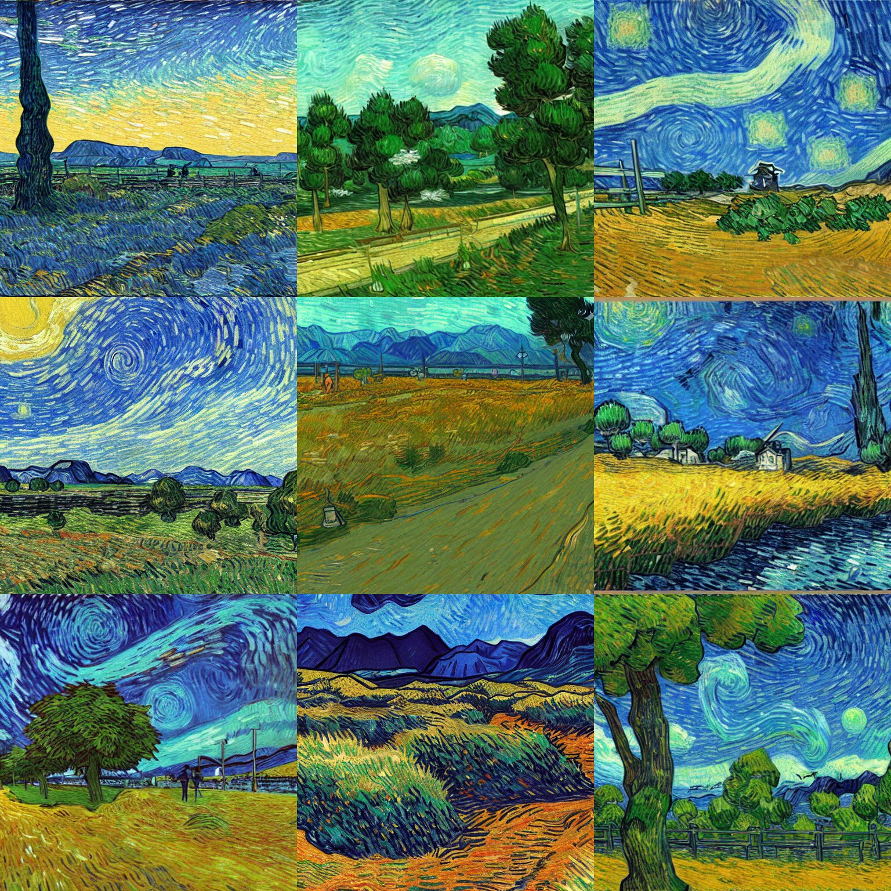
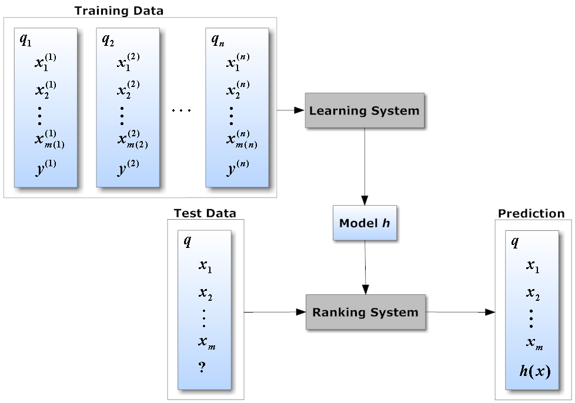
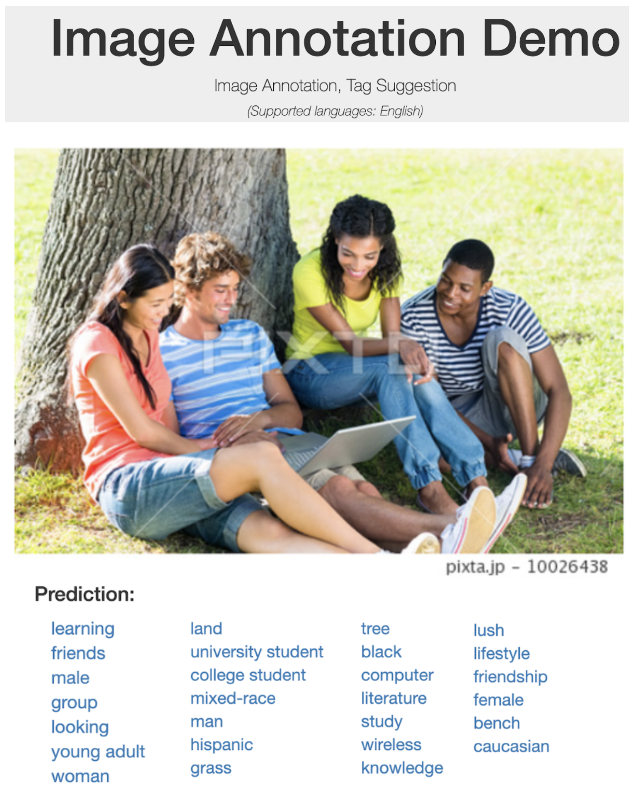
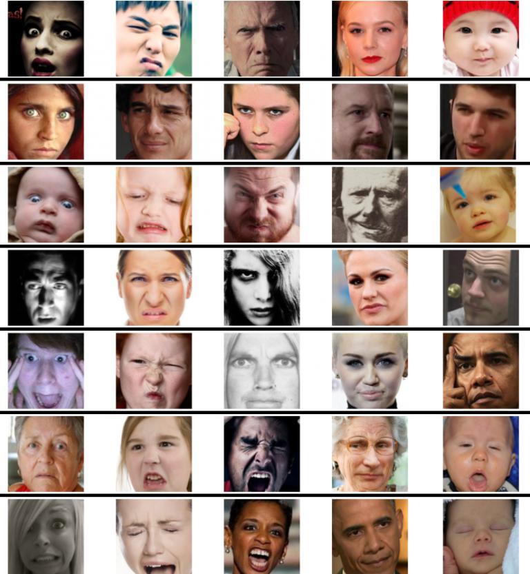
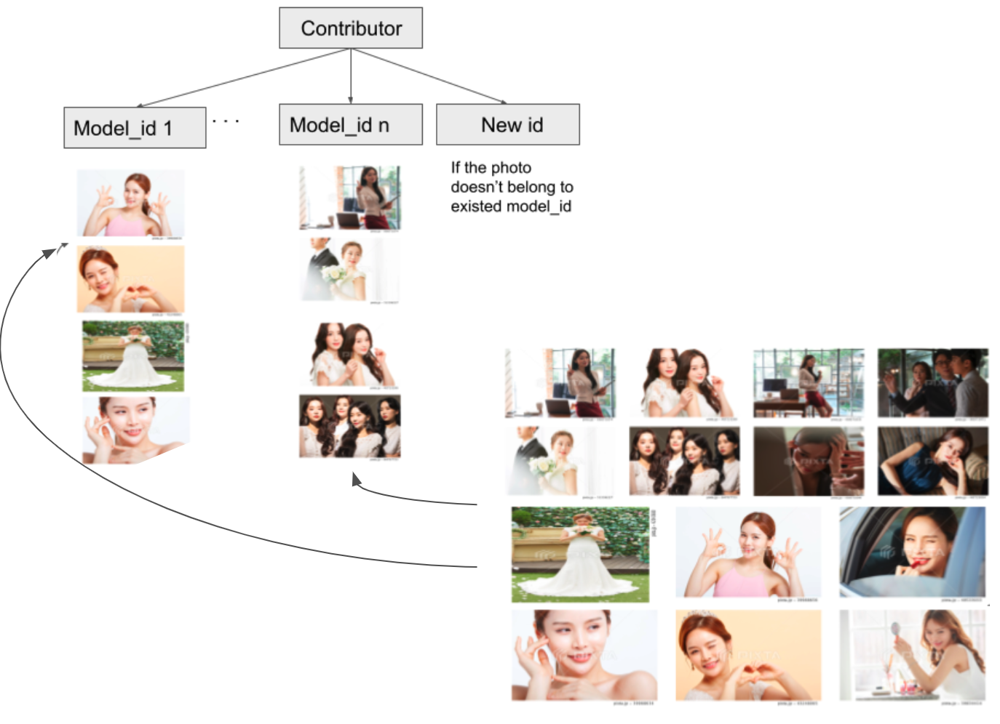
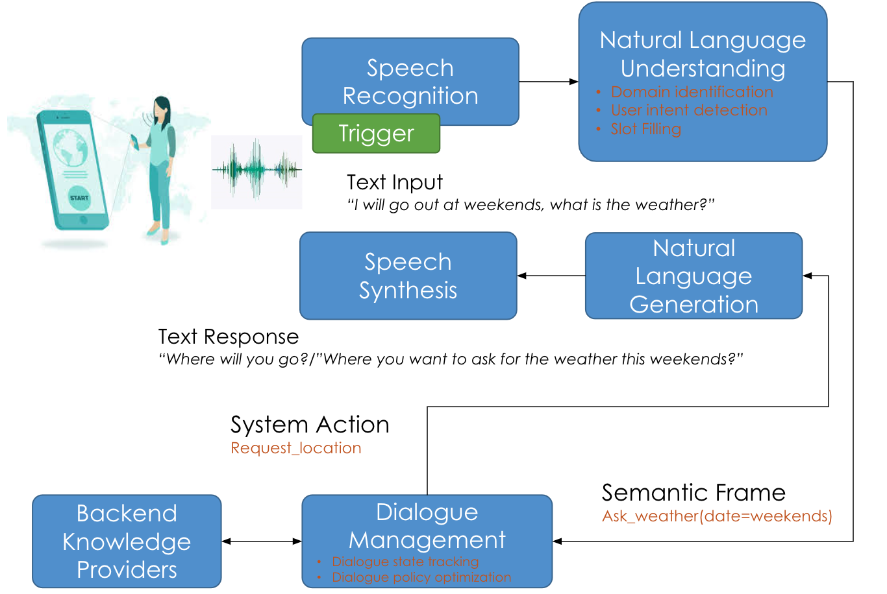

Projects
Selected industry research and engineering projects.
-
AI Agent Automation — Daily Workflow EngineeringA growing suite of AI agents that automate repetitive daily engineering and research tasks — turning hours of manual work into seconds of autonomous execution. Agents handle automated code review & PR summarisation, literature monitoring (daily ArXiv digest), meeting preparation, data pipeline health checks, and report drafting from raw experiment logs. Built with multi-model orchestration using Claude Code and Gemini, observability via Langfuse, and LLM security guardrails.
-
Developing efficient memory management mechanisms to eliminate bottlenecks and enable LLMs / LVMs to run reliably on NVIDIA Jetson and similar edge hardware, in collaboration with Dr. Ismet Dagli.
-
Voice AI product with real-time transcription, speaker diarization, content summarization, and semantic search — built on LLMs and state-of-the-art audio processing research.
-
Full-stack face recognition with >99.4% accuracy, 30 FPS, and >10,000 identifiers. Co-developed with Oxford University advisers. Deployed in hospitality and regulated gaming sectors.
-
Auto Review — AI-Powered Image Quality AssessmentAutomated quality review across 20+ quality standards, processing up to 30,000 images/day with a 70% cost reduction and 99.5% precision.
-

AI Image Generation — Stable Diffusion for Stock PhotographyAdapted Stable Diffusion to generate commercial-grade stock photography via fine-tuning and LoRA. Unified app supporting txt2img, img2img, inpaint, outpaint, upscale, and variation. -

Learning-to-Rank — Search Re-Ranking SystemML re-ranking layer trained on billions of user signals, resulting in a ~6% revenue increase (~$30K/month). Full MLOps automation from data ingestion to rollout. -

Tag Suggestion — Large-Scale Visual Auto-AnnotationMulti-label classification model for 25,000+ visual categories trained on 5M+ samples. Evolved from ResNest → Meshed-Memory Transformer → pure Vision Transformer. -

Face Attribute Recognition — Age & EmotionMulti-task model predicting age and emotion using context-aware recognition to fuse facial and scene-level features on a noisy, in-the-wild dataset. -

Face Recognition — Unsupervised Identity ClusteringClustered hundreds of thousands of unlabeled face images for automatic identity labeling, overcoming extreme class count, attribute variety, and label noise. -
 Sorgenia Voice Bot — Italy's First Energy-Sector ChatbotThe first voice bot in the energy sector in Italy, built for Sorgenia at Pi School, Rome using Dialogflow and custom NLU pipelines.
Sorgenia Voice Bot — Italy's First Energy-Sector ChatbotThe first voice bot in the energy sector in Italy, built for Sorgenia at Pi School, Rome using Dialogflow and custom NLU pipelines. -

Panasonic Core Conversational SystemCore NLP platform covering speaker identification, speech recognition, wake-word detection, and multi-domain dialog. Piloted at a healthcare center for elderly residents in Kyoto, Japan.